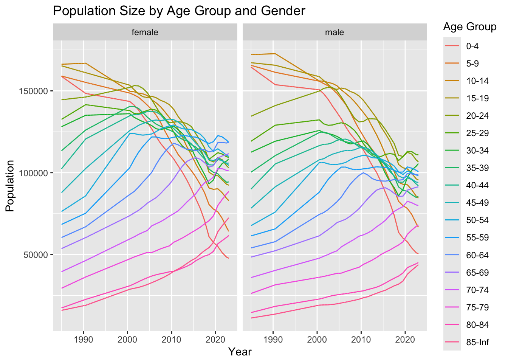

Attaching package: 'kableExtra'
The following object is masked from 'package:dplyr':
group_rows
library(lubridate)
Attaching package: 'lubridate'
The following objects are masked from 'package:base':
date, intersect, setdiff, union
Question 1: Population Sizes by Age Group and Sex
dat <- puerto_rico_counts#marginal counts, we may want to collapse some of these (maybe into 10 yr bins?)t1 <- dat %>%filter(year(date) ==2017) %>%group_by(agegroup, sex) %>%summarize(count =mean(population), .groups ="drop") %>%pivot_wider(names_from = sex, values_from = count, values_fill =0)kable(t1)
agegroup
female
male
0-4
70412.08
73674.39
5-9
87449.42
89524.94
10-14
96127.70
100430.57
15-19
108478.80
113009.61
20-24
114702.23
117455.06
25-29
112516.20
110815.97
30-34
98738.98
90723.61
35-39
108877.15
97388.46
40-44
108264.92
97873.43
45-49
112067.91
101362.78
50-54
120523.92
103849.54
55-59
119168.00
101434.07
60-64
113896.63
95691.26
65-69
106025.80
87428.01
70-74
93655.23
76230.45
75-79
68729.07
54323.22
80-84
49040.13
35531.38
85-Inf
52396.47
30857.98
#stratified plotsdat %>%ggplot(aes(date, population)) +geom_line(aes(color = agegroup)) +facet_wrap(~sex) +labs(title ="Population Size by Age Group and Gender",x ="Year",y ="Population",color ="Age Group")

Considering the population size of Puerto Rico from 1985 to 2022, we see differing trends across age groups. For both males and females, the population size for older age groups is increasing, while younger age groups are decreasing. We see this particularly in the 0-4 age group for both sexes.
Use data from before 2017 to estimate expected mortality and a standard deviation for each week. Do this by age group and sex. Describe tendencies you observe. You can combine data into bigger age groups if the data show they have similar death rates
`summarise()` has grouped output by 'agegroup', 'sex', 'mmwr_week'. You can
override using the `.groups` argument.
t2 <- weekly_deaths %>%# looking at trends/ estimate what a typical week looks like across yearsgroup_by(mmwr_week, agegroup, sex) %>%summarise(mean_deaths =mean(total_deaths),sd =sd(total_deaths)) %>%ungroup()
`summarise()` has grouped output by 'mmwr_week', 'agegroup'. You can override
using the `.groups` argument.
kable(head(t2, 10))
mmwr_week
agegroup
sex
mean_deaths
sd
1
0-4
female
6.09375
2.8438885
1
0-4
male
7.15625
4.5302523
1
5-9
female
0.50000
0.8424235
1
5-9
male
0.59375
0.8370214
1
10-14
female
0.56250
0.8775883
1
10-14
male
0.90625
0.8175248
1
15-19
female
0.96875
1.2822454
1
15-19
male
3.53125
1.8136467
1
20-24
female
1.40625
1.2406911
1
20-24
male
6.40625
2.3808290
# some age groups have similar trendst2 %>%ggplot(aes(x = mmwr_week, y = mean_deaths, color = sex)) +geom_line() +geom_ribbon(aes(ymin = mean_deaths - sd,ymax = mean_deaths + sd,fill = sex), alpha =0.2, color =NA) +facet_wrap(~ agegroup, scales ="free_y")
`summarise()` has grouped output by 'agegroup_new', 'sex', 'mmwr_week'. You can
override using the `.groups` argument.
t3 <- new_dat %>%# looking at trends/ estimate what a typical week looks like across yearsgroup_by(mmwr_week, agegroup_new, sex) %>%summarise(mean_deaths =mean(total_deaths),sd =sd(total_deaths)) %>%ungroup()
`summarise()` has grouped output by 'mmwr_week', 'agegroup_new'. You can
override using the `.groups` argument.
kable(head(t3, 10))
mmwr_week
agegroup_new
sex
mean_deaths
sd
1
0-24
female
8.736842
4.195778
1
0-24
male
17.000000
7.128170
1
25-64
female
50.631579
7.290946
1
25-64
male
108.236842
18.397171
1
65-84
female
113.763158
20.674353
1
65-84
male
141.921053
26.324772
1
85+
female
80.078947
26.970837
1
85+
male
60.921053
21.364762
2
0-24
female
9.289474
5.598783
2
0-24
male
18.500000
9.146702
t3 %>%ggplot(aes(x = mmwr_week, y = mean_deaths, color = sex)) +geom_line() +geom_ribbon(aes(ymin = mean_deaths - sd,ymax = mean_deaths + sd,fill = sex), alpha =0.2, color =NA) +facet_wrap(~ agegroup_new, scales ="free_y")